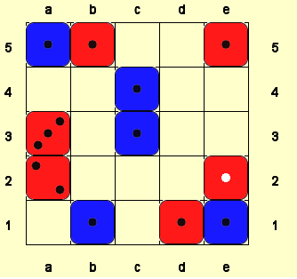
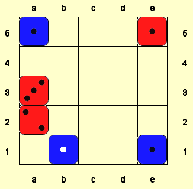

Employing the Concept of "Economy" in Cephalopod Strategy
Xifeng wrote a sweet strategy article about a concept in Cephalopod of which I wasn't aware. A must read for Cephalopod fans. Check it out here.
A common complaint by new players trying to learn (or trying to avoid learning) Cephalopod is that the rate of recycling is too high to make any long term plans. It is true that it is very difficult to plan out more than a few moves ahead, but there are some tricks to getting a more favorable position later on. I believe that the most important of these is what I call Economy.
During a Cephalopod game, the players’ scores change on every turn. What does not change very often or very fast is the difference between the players’ scores. This is the most stable factor in the game, so long-term strategy should revolve particularly around that. Building sixes is the simplest approach to economy, since a six cannot be captured, but it often fails; the winner is not always the player with the most sixes.
I distinguish between three kinds of non-capturing moves:
Loony moves are moves that allow your opponent to make a 6. I call them loony because of the impartial nature of forming 6s: with regard to making a 6, both players have the same options.
Fraught moves are moves that leave an empty square between two or more of your own pieces. Whether you or your opponent plays to that space, the difference in score will change in your opponent’s favor, unless you can capture an equal or greater number of enemy pieces.
Free moves are moves that are neither Loony nor Fraught.
The dynamic between loony and fraught moves leads to some simple tactics for securing a middle-to-long term advantage. It can be safe to make a fraught move if capturing your pieces would be a loony move, especially if capturing your pieces would be both fraught and loony. It can similarly be safe to make a loony move if making the 6 is sufficiently fraught.

Here, Red has made a fraught move that Blue cannot capitalize on without making a fraught move of their own.
What I consider the most powerful tactic in Cephalopod I call an “option select” after its usage in video-game strategy, a move that accounts for multiple possible outcomes:

If red is forced to play at A1 or B2 first, it’s a huge boon to Blue: the move is both fraught and loony for red. If blue is forced to play here first, the move is only loony. It will move the game closer to completion without changing the difference in scores. As long as this position is unresolved, Blue can happily trade material for parity (once Red moves into this position, Blue makes up the sacrificed material) or trade parity for material (playing here will not lose Blue any material.)
Economy alone is not enough to win at Cephalopod, but it is a solid foundation for building tactics and a reliable strategic goal to work toward.